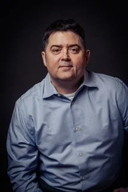
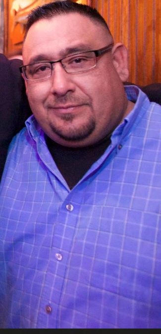
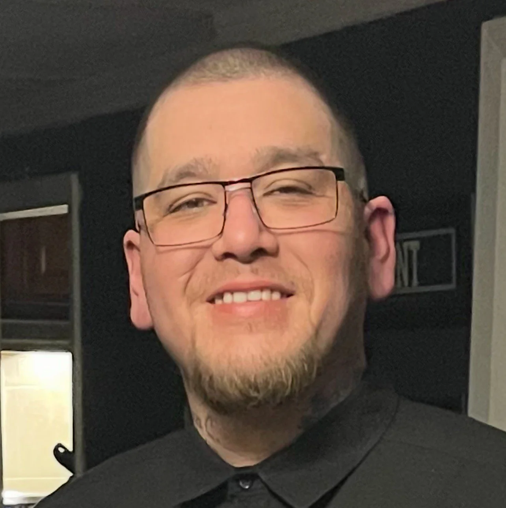

Chad Davenport, Founder
Chad is a U.S. Navy veteran who learned the importance of showing up for others while serving his country. During his time in the Navy, he helped in the evacuation after Mount Pinatubo erupted in the Philippines and provided humanitarian support to San Francisco after the 1989 earthquake. For the past 30 years, that same spirit of compassion has guided him as he organizes food and clothing drives, hosts annual Toy Drives for local families, prepares home-cooked meals, and personally delivers care, hope, and connection to people experiencing homelessness in Dallas.

Ray Contreras
Ray is a lifelong Dallas resident who has proudly served with Tonight We Ride for over 24 years. Committed to the organization's mission of service and community impact, Ray upholds a family legacy of giving back. His son and grandson now continue that tradition, contributing full-time to the organization's projects and outreach initiatives.

Carlos Contreras
Carlos is a second-generation contributor to Tonight We Ride, proudly following in the footsteps of his father, Ray. A committed family man, he has raised his children to volunteer alongside him, ensuring that the spirit of service continues through the next generation. For over 20 years, Carlos has played a key role in organizing donation sorting and logistics, coordinating canned goods drives, and fundraising for local school athletic programs. He is also a familiar and beloved presence at our annual Toy Drive, where he has joyfully taken on the role of Santa Claus for countless children and families.